Your retro library,
tidy and complete
Tu biblioteca retro,
ordenada y completa
meROMS is a desktop manager for EmulationStation gamelist.xml files. Browse your systems, edit game data and media, scrape what's missing and clean up the rest — for classic EmulationStation and ES-DE.
meROMS es un gestor de escritorio para los gamelist.xml de EmulationStation. Recorre tus sistemas, edita datos y medios de cada juego, descarga lo que falta y limpia lo que sobra — para EmulationStation clásico y ES-DE.
Free and open source · macOS, Windows and Linux · English and Spanish Gratis y de código abierto · macOS, Windows y Linux · inglés y español

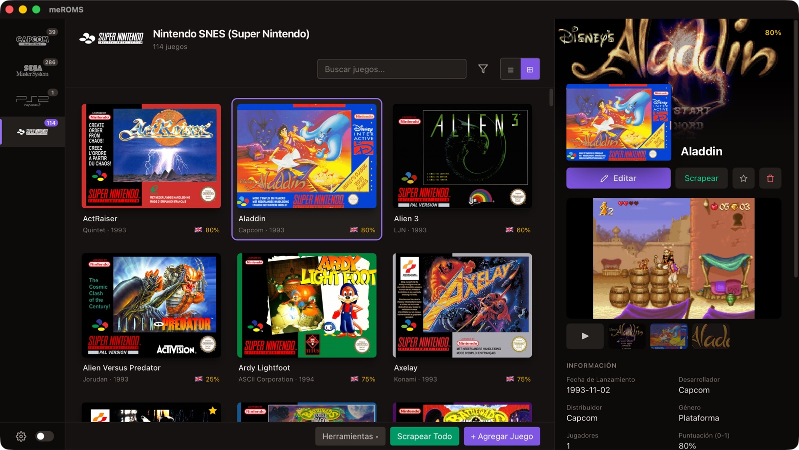
TourRecorrido
Everything about a game, at a glanceTodo sobre cada juego, de un vistazo
A cover grid or a table on the left; on the right, the selected game with artwork, screenshots, video and details. Mark favourites, scrape or delete without opening the editor. Cuadrícula de carátulas o tabla a la izquierda; a la derecha, el juego elegido con arte, capturas, vídeo y datos. Marca favoritos, scrapea o borra sin abrir el editor.
A table when you need dataUna tabla cuando necesitas datos
Thumbnails, sortable columns you choose and reorder, saved widths and the name frozen while you scroll sideways. Keyboard navigation too. Filter by what you've played, and sort the grid by most played, recent, play time, release date or rating. Miniaturas, columnas ordenables que eliges y recolocas, anchos que se recuerdan y el nombre fijo al desplazarte en horizontal. También con el teclado. Filtra por lo que has jugado y ordena la cuadrícula por más jugados, recientes, tiempo de juego, fecha de salida o nota.

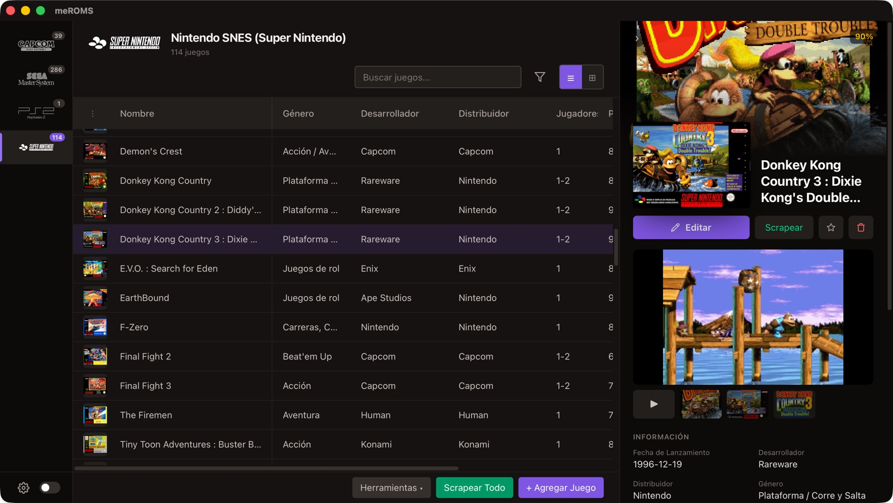
Know each systemConoce cada sistema
Logos for nearly a hundred systems, a short history, technical specs and how complete your library is: covers, descriptions, videos, favourites. And what you play: most played and recently played, with times played, play time and last played for each game. Logos de casi cien sistemas, un poco de historia, ficha técnica y lo completa que está tu biblioteca: carátulas, descripciones, vídeos, favoritos. Y lo que juegas: los más jugados y los jugados hace poco, con veces, tiempo de juego y última partida de cada juego.

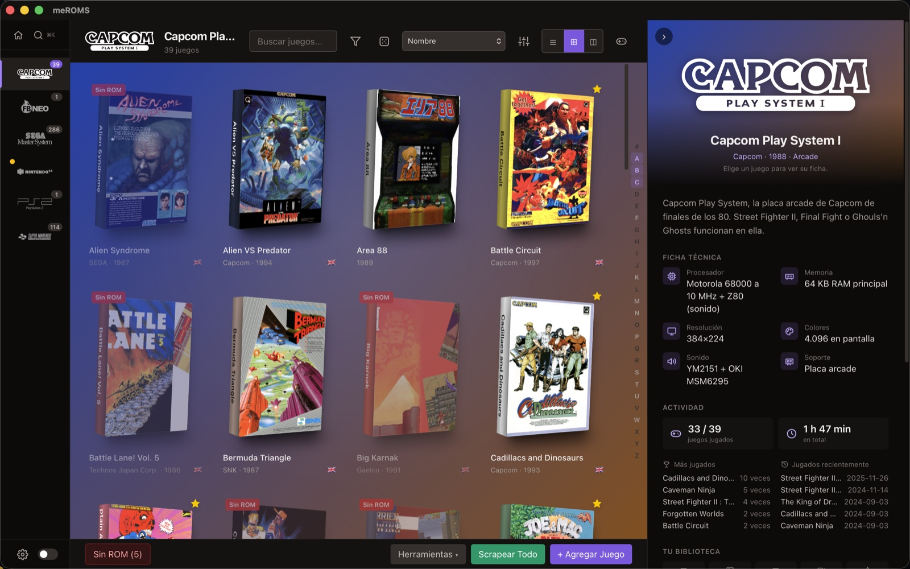
A full editorUn editor completo
Media on one side, data on the other. Set any image or video, fix a cover saved as a screenshot, rename the ROM and its media in one go. Medios a un lado y datos al otro. Asigna cualquier imagen o vídeo, corrige una carátula guardada como captura, renombra la ROM y sus medios de una vez.

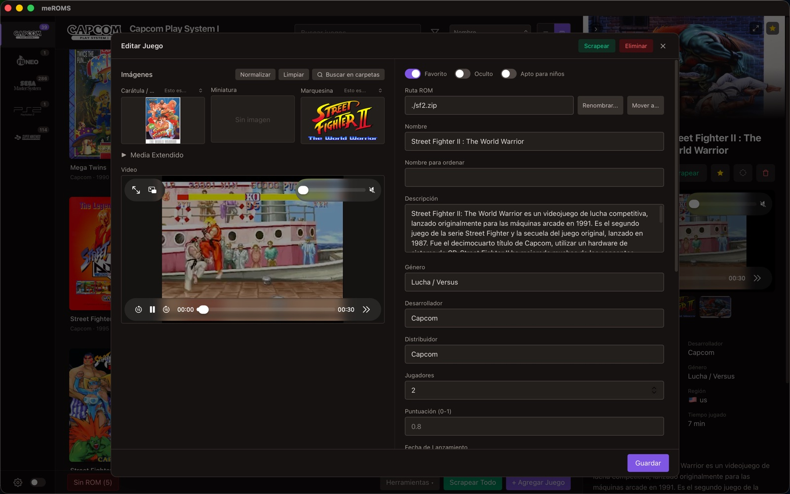
The whole game, full screenEl juego entero, a pantalla completa
Open a game over the whole window and move to the previous or next one with the arrows. Media, video and details on one page; make it open with a single click if you like (Settings). Abre un juego a toda la ventana y pasa al anterior o al siguiente con las flechas. Medios, vídeo y datos en una sola página; si quieres, que se abra con un clic (Ajustes).

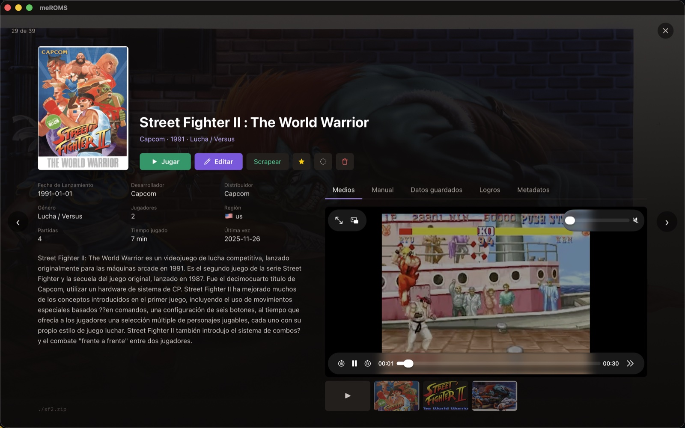
Manuals and savesManuales y partidas
Read the game's manual in the built-in PDF viewer, page by page or enlarged. Its save games and states are one tab away: back them up, import or delete them. Lee el manual del juego en el visor de PDF integrado, página a página o en grande. Sus partidas guardadas y estados, en la pestaña de al lado: cópialos, impórtalos o bórralos.

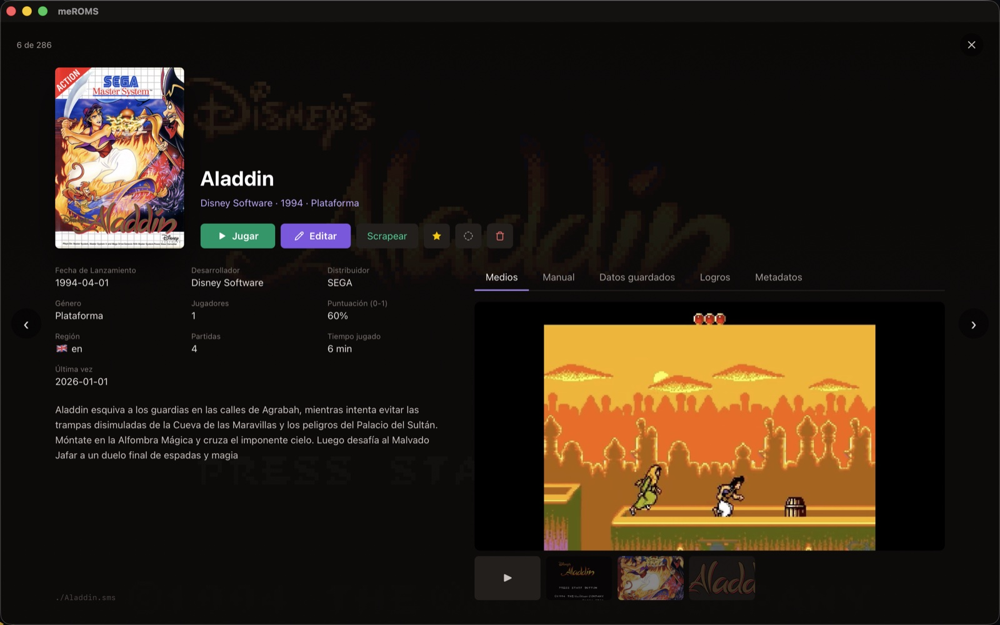
The file itselfEl propio fichero
Its files, CRC, MD5 and SHA-1 (inside the zip too), what the system's DAT says about it, its id in the metadata sources and every field of its gamelist entry. Sus ficheros, CRC, MD5 y SHA-1 (también dentro del zip), qué dice de él el DAT del sistema, su id en las fuentes de metadatos y todos los campos de su entrada en la gamelist.

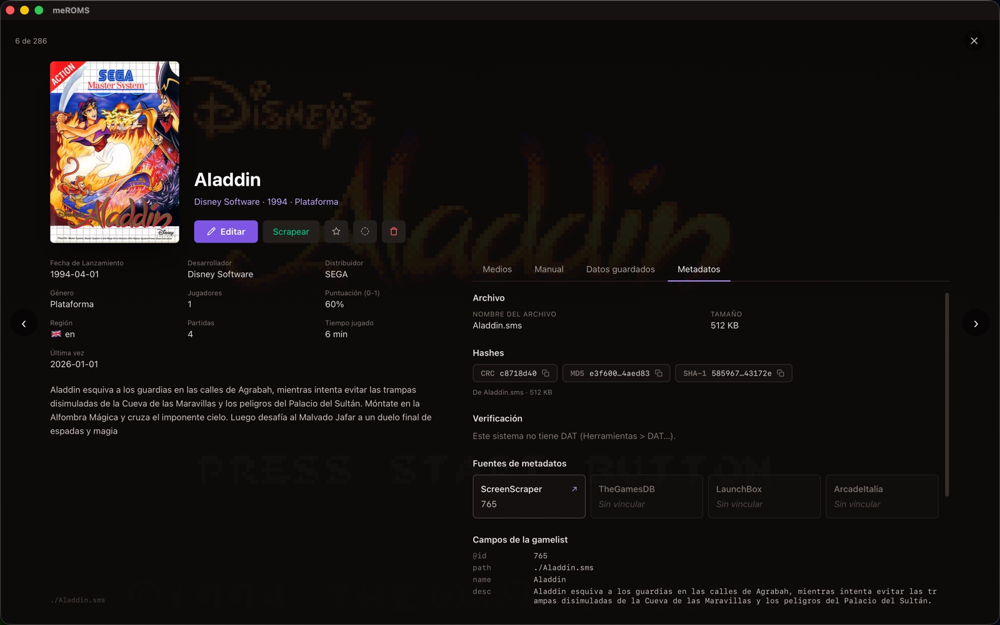
Playing, finished, abandoned...Jugando, terminado, abandonado...
Give each game a status (incomplete, finished, 100% completed, abandoned, never playing) plus "playing" and "backlog". Filter by it, see it on the covers, and ES-DE's "completed" stays in step. Dale a cada juego un estado (incompleto, terminado, completado al 100 %, abandonado, nunca jugar) y además «jugando» y «pendiente». Filtra por él, míralo en las carátulas, y el «completado» de ES-DE va a la par.

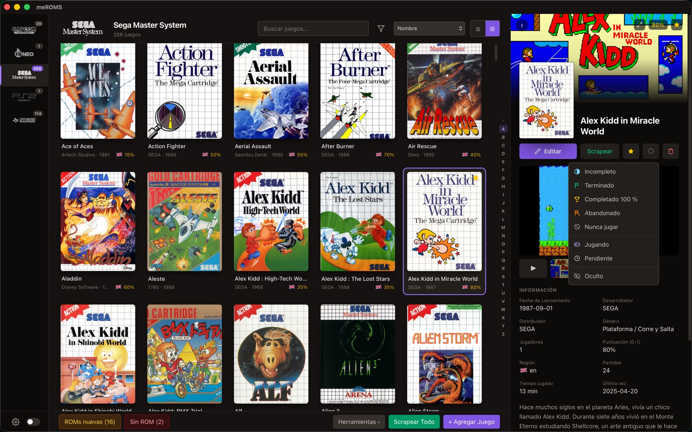
Find it fastEncuéntralo rápido
Search, filters (genre, region, favourites, missing media, played, status...) and a jump-to-letter bar beside the list. Búsqueda, filtros (género, región, favoritos, medios que faltan, jugados, estado...) y una barra para saltar a una letra junto a la lista.

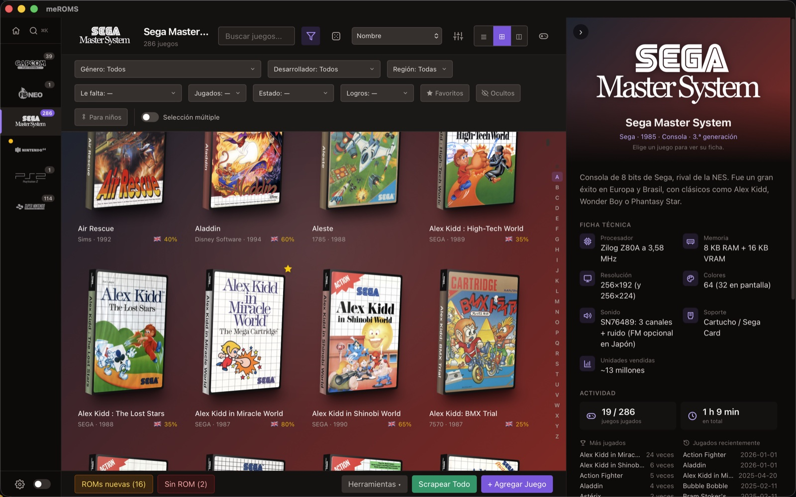
Any game, any system: ⌘KCualquier juego, cualquier sistema: ⌘K
Press ⌘K (Ctrl+K on Windows and Linux) and type: games from every system, with their covers, by title or ROM name. Pick one and you're there. Pulsa ⌘K (Ctrl+K en Windows y Linux) y escribe: juegos de todos los sistemas, con su carátula, por título o por nombre de la ROM. Elige uno y estás en él.

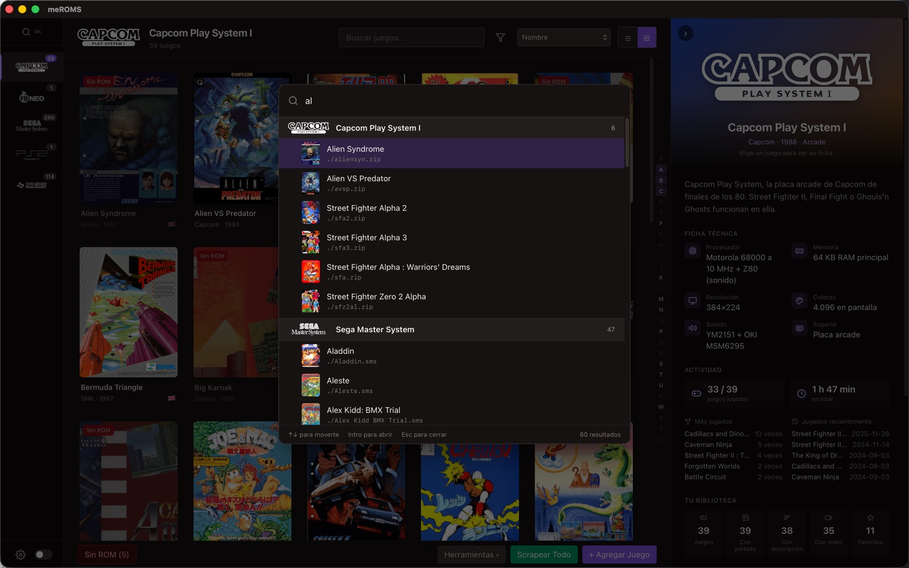
You decide what the scraper touchesTú decides qué toca el scraper
For each field and media type: overwrite, only if empty, or leave it. Covers, screenshots, videos, logos... and also back covers, cartridges and discs, and PDF manuals. Para cada dato y tipo de medio: sobrescribir, solo si está vacío o no tocarlo. Carátulas, capturas, vídeos, logos... y también contraportadas, cartuchos y discos, y manuales en PDF.

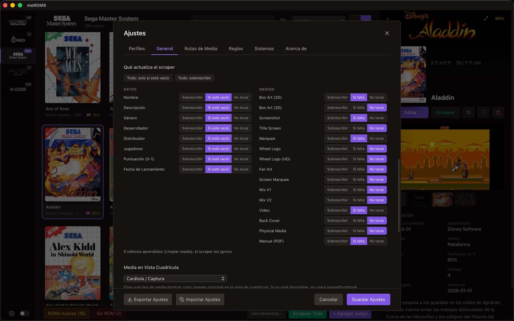
FeaturesFunciones
Built for big, messy librariesPensado para bibliotecas grandes y desordenadas
Every change to a gamelist is backed up first, and files are sent to the trash instead of being deleted. Antes de cada cambio en un gamelist se guarda una copia, y los ficheros van a la papelera en lugar de borrarse.
ScrapingScraper
ScreenScraper, LaunchBox, ArcadeItalia and TheGamesDB. Scrape one game by searching and picking the right result (the one matching your ROM comes first), or a whole system. Filter the games missing a cover or a video and scrape only those. You choose what may be overwritten, and your regions and languages.ScreenScraper, LaunchBox, ArcadeItalia y TheGamesDB. Scrapea un juego buscando y eligiendo el resultado bueno (el que coincide con tu ROM sale primero), o un sistema entero. Filtra los juegos sin carátula o sin vídeo y scrapea solo esos. Tú eliges qué se puede sobrescribir y el orden de regiones e idiomas.
Classic ↔ ES-DE migrationMigración clásica ↔ ES-DE
Copy or move gamelists, media and collections between both structures. Your ROMs are never touched.Copia o mueve gamelists, medios y colecciones entre las dos estructuras. Tus ROMs no se tocan nunca.
New ROMsROMs nuevas
Find ROM files the gamelist doesn't know yet, add them with clean names and scrape just those. Remove junk files while you're at it.Encuentra ficheros que el gamelist aún no tiene, añádelos con nombres limpios y scrapea solo esos. De paso, quita los que no son ROMs.
CleanupLimpieza
Duplicates, games without ROM, unused media, the same image saved as several types, broken links, damaged files (empty or half-downloaded, downloaded again on request) and the blank placeholders a source gives for many games, which the scraper then learns to skip. In ES-DE it also finds the classic-structure media left in the ROM folder: old copies go to the trash, the ones ES-DE still lacks are left for Normalize.Duplicados, juegos sin ROM, medios que no usa nadie, la misma imagen guardada como varios tipos, enlaces rotos, ficheros dañados (vacíos o a medio descargar, que se vuelven a bajar si quieres) y los rellenos vacíos que da una fuente para muchos juegos, que el scraper aprende a ignorar. En ES-DE encuentra además los medios de la estructura clásica que quedan en la carpeta de ROMs: las copias viejas, a la papelera; los que ES-DE aún no tiene, para Normalizar.
Media typesTipos de medio
Detects covers and screenshots saved the other way round by their shape, and swaps them for one game or a whole system.Detecta por su forma las carátulas y capturas guardadas al revés, y las intercambia en un juego o en todo el sistema.
Rename with rulesRenombrar con reglas
Rename ROMs from their title or with regex cleanup rules. Media, gamelist, collections and .m3u playlists follow along, and so do the tracks of a .cue or .gdi. Changed your mind? Undo it.Renombra ROMs a partir del título o con reglas de limpieza (regex). Medios, gamelist, colecciones y listas .m3u se actualizan solos, y también las pistas de un .cue o .gdi. ¿Te arrepientes? Se deshace.
DAT filesFicheros DAT
Load a MAME, Logiqx or No-Intro DAT per system: missing games, unknown files, clones and BIOS, and a "hide clones" filter. ROMs are recognised by their content (CRC, also inside zip and 7z), and Rename can give them the DAT's official names.Carga un DAT de MAME, Logiqx o No-Intro por sistema: juegos que faltan, ficheros desconocidos, clones y BIOS, y un filtro para ocultar clones. Las ROMs se reconocen por su contenido (CRC, también dentro de zip y 7z) y Renombrar puede darles el nombre oficial del DAT.
Bulk editEdición múltiple
Select many games and change common fields and flags at once, with find & replace and a preview before saving. Turn "The X" into "X, The", and translate descriptions with DeepL (your own free key).Selecciona varios juegos y cambia campos y marcas a la vez, con buscar y reemplazar y vista previa antes de guardar. Pasa «The X» a «X, The» y traduce descripciones con DeepL (con tu clave gratuita).
Multi-disc & collectionsMultidisco y colecciones
Detect multi-disc games and generate their .m3u playlists, or build custom collections from a filter.Detecta juegos de varios discos y genera sus listas .m3u, o crea colecciones personalizadas.
Scrape without an accountScrapear sin cuenta
Download the LaunchBox database once (about 110 MB): no account and no daily limit. Arcade systems also use ArcadeItalia, with histories and videos.Descarga una vez la base de datos de LaunchBox (unos 110 MB): sin cuenta y sin límite diario. Los sistemas arcade usan además ArcadeItalia, con historias y vídeos.
Move gamesMover juegos
Send games to another system or a subfolder: ROM, disc files, media, gamelist entry and collections go together, in classic and ES-DE profiles. Nothing is ever overwritten.Lleva juegos a otro sistema o a una subcarpeta: ROM, ficheros de disco, medios, entrada del gamelist y colecciones van juntos, en perfiles clásicos y ES-DE. Nunca se sobrescribe nada.
Take a system to another profileLleva un sistema a otro perfil
From a classic library to ES-DE or the other way round, each with its own ROM folder: ROMs with their disc files, media renamed for the other structure, the gamelist with all its data and the collections. Move or copy; nothing is ever overwritten.De una biblioteca clásica a una ES-DE o al revés, cada una con su carpeta de ROMs: ROMs con sus ficheros de disco, medios con el nombre de la otra estructura, la gamelist con todos sus datos y las colecciones. Mover o copiar; nunca se sobrescribe nada.
Long runs, safeLotes largos, sin miedo
Scrape All saves every 10 games, can be stopped at any time and continued later with the games that were left, even after closing the app.Scrapear Todo guarda cada 10 juegos, se puede detener cuando quieras y continuar después con los que faltaban, aunque hayas cerrado la app.
See where it's atVes por dónde va
Long tools never freeze the window: each one shows what it's doing, "N of M" and the file in progress. Any of them can be cancelled; a change stops after the current game and keeps what was done. And the "Done" message never undoes anything when you close it.Las herramientas largas no congelan la ventana: cada una enseña qué está haciendo, «N de M» y el fichero en curso. Todas se pueden cancelar; un cambio se para tras el juego en curso y guarda lo hecho. Y el aviso de «Hecho» nunca deshace nada al cerrarlo.
Best versionMejor versión
One version of each game (1G1R): the one that best fits your region and language order, the newest revision and a good dump. The others can be hidden, moved to a subfolder or sent to the trash.Una versión de cada juego (1G1R): la que mejor encaja con tu orden de regiones e idiomas, la revisión más nueva y un buen volcado. Las demás se pueden ocultar, mover a una subcarpeta o mandar a la papelera.
Take it with youLlévatela contigo
Export systems, games and media to an SD card, USB or network folder with your profile's structure, copying only what's new or changed, and bring favourites and play stats back. Or compare with another folder and copy what's missing either way.Exporta sistemas, juegos y medios a una SD, USB o carpeta de red con la estructura de tu perfil, copiando solo lo nuevo o cambiado, y trae de vuelta favoritos y estadísticas. O compara con otra carpeta y copia lo que falte en cualquiera de los dos sentidos.
Discs to CHDDiscos a CHD
Convert .cue, .gdi, .iso and the discs of an .m3u to CHD with chdman (installed separately: it comes with MAME). Each CHD is verified before the game uses it; the originals go to the trash, stay or move to a subfolder.Convierte .cue, .gdi, .iso y los discos de un .m3u a CHD con chdman (se instala aparte: viene con MAME). Cada CHD se comprueba antes de que el juego lo use; los originales van a la papelera, se quedan o pasan a una subcarpeta.
Full-screen game pageFicha a pantalla completa
Each game over the whole window, with previous/next arrows and tabs: media, the manual in a built-in PDF viewer, save games and states, and metadata (files, hashes, DAT check, every gamelist field).Cada juego a toda la ventana, con flechas de anterior/siguiente y pestañas: medios, el manual en un visor de PDF integrado, partidas guardadas y estados, y metadatos (ficheros, hashes, comprobación con el DAT, todos los campos de la gamelist).
Game statusesEstados de juego
Incomplete, finished, 100% completed, abandoned or never playing, plus playing and backlog. Shown on covers and in the table, with a filter and bulk edit. Finished games are marked "completed" for ES-DE too.Incompleto, terminado, completado al 100 %, abandonado o nunca jugar, y además jugando y pendiente. Se ven en las carátulas y en la tabla, con filtro y edición múltiple. Los terminados quedan como «completado» también para ES-DE.
Find your wayMuévete por tu biblioteca
Jump to a letter from the bar beside the list, a welcome screen when nothing is picked, each system with its own colours, logo and specs, and grid cards with the shape of your own media (landscape N64 boxes, 4:3 screenshots...).Salta a una letra desde la barra junto a la lista, una pantalla de bienvenida cuando no hay nada elegido, cada sistema con sus colores, su logo y su ficha técnica, y tarjetas en la cuadrícula con la forma de tus medios (cajas de N64 apaisadas, capturas 4:3…).
Each system, your wayCada sistema, a tu manera
Per system and per profile: what the grid shows (cover, screenshot, marquee...), the shape of its cards, and which image the game details use as cover and as header background. Everything on "Automatic" until you change it.Por sistema y por perfil: qué enseña la cuadrícula (carátula, captura, marquee…), la forma de sus tarjetas y qué imagen usa el detalle del juego como portada y como fondo de la cabecera. Todo en «Automático» hasta que lo cambies.
ToolsHerramientas
The Tools menuEl menú Herramientas
At the bottom of every system, the Tools menu works on the whole system. Each tool shows what it will do and asks before changing anything. Abajo, en cada sistema, el menú Herramientas trabaja sobre el sistema entero. Cada herramienta enseña lo que va a hacer y pregunta antes de cambiar nada.

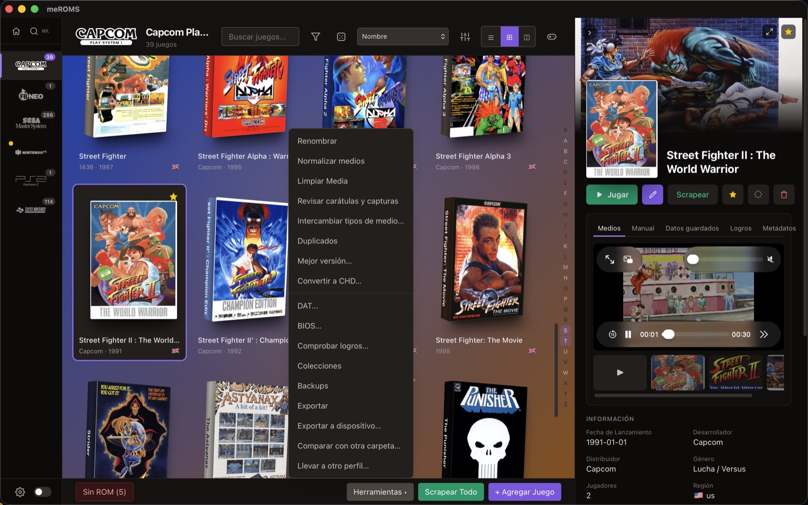
Rename the system's ROM files from their title, with the cleanup rules or with the DAT's official name, with a preview and conflict check. Media, gamelist, collections and .m3u playlists are updated too, and the tracks of a .cue or .gdi named after the game are renamed with it.Renombra los ficheros de ROM del sistema a partir del título, con las reglas de limpieza o con el nombre oficial del DAT, con vista previa y aviso de choques. Se actualizan también medios, gamelist, colecciones y listas .m3u, y las pistas de un .cue o .gdi que se llaman como el juego se renombran con él.
Classic: moves media with old-style names (suffixes, images/...) to <folder>/<ROM name>.<ext>. ES-DE: recovers classic-style media left in the ROM folder into ES-DE's media folder.Clásica: pasa los medios con nombres antiguos (sufijos, images/...) a <carpeta>/<nombre de la ROM>.<ext>. ES-DE: recupera los medios con estructura clásica que quedaron en la carpeta de ROMs y los lleva a la de medios de ES-DE.
Five checks in one: media no game uses, the same image saved as several types of one game, links to files that don't exist, damaged files (empty, an error page saved as an image, a download cut halfway — with an offer to download them again) and placeholders (the same file in 5 or more games), which are remembered so the scraper skips them.Cinco revisiones en una: medios que no usa ningún juego, la misma imagen guardada como varios tipos de un juego, enlaces a ficheros que no existen, ficheros dañados (vacíos, una página de error guardada como imagen, una descarga cortada — con opción de volver a bajarlos) y rellenos (el mismo fichero en 5 juegos o más), que se recuerdan para que el scraper los ignore.
Compares each image with the usual shape of the system's covers and screenshots and lists the ones saved the other way round, with thumbnails, to swap them.Compara cada imagen con la forma habitual de las carátulas y capturas del sistema y lista las guardadas al revés, con miniaturas, para intercambiarlas.
Swaps two media types for the whole system (for example covers and screenshots), when a scraper saved them all the wrong way.Intercambia dos tipos de medio en todo el sistema (por ejemplo carátulas y capturas), cuando un scraper los guardó todos al revés.
Groups games that look the same (same ScreenScraper ID, same file hash or a similar name). The ones you mark are removed, with their ROM and media sent to the trash.Agrupa los juegos que parecen el mismo (mismo ID de ScreenScraper, mismo hash del fichero o nombre parecido). Los que marques se quitan, y su ROM y sus medios van a la papelera.
Undoes the last rename, move, media normalization or swap: files, gamelists, collections and playlists go back, keeping what you edited afterwards.Deshace el último renombrado, movimiento, normalización o intercambio de media: ficheros, gamelists, colecciones y listas vuelven atrás, respetando lo que editaste después.
Copies the chosen systems, games (all, favourites or all but hidden) and media types to an SD card, USB or network folder with your profile's structure, only what's new or changed. Brings favourites and play stats back from it.Copia los sistemas, juegos (todos, favoritos o sin ocultos) y tipos de media que elijas a una SD, USB o carpeta de red con la estructura de tu perfil, solo lo nuevo o cambiado. Trae de vuelta favoritos y estadísticas de juego.
Your library against a copy or a device's SD card with the same structure, system by system: only here, only there and different (by size, or also by content). Copy games either way with their files, media and gamelist entry; what gets replaced in the library goes to the trash.Tu biblioteca frente a una copia o la SD de un dispositivo con la misma estructura, sistema a sistema: solo aquí, solo allí y distintos (por tamaño, o también por contenido). Copia juegos en cualquier sentido con sus ficheros, medios y entrada del gamelist; lo que se reemplaza en la biblioteca va a la papelera.
Moves or copies the whole system to another saved profile with its own ROM folder, classic or ES-DE: ROMs, media in the other structure, gamelist and collections. Games the other profile already has are skipped.Mueve o copia el sistema entero a otro perfil guardado con su propia carpeta de ROMs, clásico o ES-DE: ROMs, medios con la otra estructura, gamelist y colecciones. Los juegos que el otro perfil ya tiene se saltan.
Groups the versions of each game (by the DAT, or by the name without tags) and keeps the best one: no betas or bad dumps, your region and language, the newest revision. The others can be hidden, moved to a subfolder or sent to the trash.Agrupa las versiones de cada juego (por el DAT, o por el nombre sin etiquetas) y se queda con la mejor: sin betas ni malos volcados, tu región y tu idioma, la revisión más nueva. Las demás se pueden ocultar, mover a una subcarpeta o mandar a la papelera.
Lists the system's disc games that can become CHD (.cue, .gdi, .iso, or an .m3u of them) and converts them with chdman, which you install yourself (it comes with MAME). Each CHD is verified before use; gamelist, playlists and collections are updated, and the originals go to the trash, stay or move to a subfolder.Lista los juegos de disco del sistema que pueden pasar a CHD (.cue, .gdi, .iso, o un .m3u de ellos) y los convierte con chdman, que instalas tú (viene con MAME). Cada CHD se comprueba antes de usarlo; se actualizan gamelist, listas y colecciones, y los originales van a la papelera, se quedan o pasan a una subcarpeta.
Load a MAME, Logiqx or No-Intro DAT for the system: games you're missing, files the DAT doesn't know, clone and BIOS tags, and names taken from the DAT. Check by content recognises ROMs by their CRC whatever their name (zip and 7z instantly; loose files once, then cached).Carga un DAT de MAME, Logiqx o No-Intro para el sistema: juegos que te faltan, ficheros que el DAT no conoce, marcas de clon y BIOS, y nombres sacados del DAT. Comprobar por contenido reconoce las ROMs por su CRC se llamen como se llamen (zip y 7z al instante; los sueltos una vez y luego en caché).
For each system, the BIOS and system files its emulators ask for (RetroArch's list) and whether your BIOS folder has them: OK, missing or a different file. The system summary shows "BIOS: N of M".Para cada sistema, las BIOS y ficheros de sistema que piden sus emuladores (lista de RetroArch) y si están en tu carpeta de BIOS: OK, falta o no coincide. El resumen del sistema enseña «BIOS: N de M».
Detects multi-disc games and generates their .m3u playlists, and builds custom collections from the games you choose.Detecta los juegos de varios discos y genera sus listas .m3u, y crea colecciones personalizadas con los juegos que elijas.
Every save keeps a copy of the gamelist first (the last 20). See them by date, restore one or delete it.Cada vez que se guarda se hace antes una copia del gamelist (se guardan las 20 últimas). Míralas por fecha, restaura una o bórrala.
Exports the system as a RetroArch playlist (.lpl).Exporta el sistema como lista de reproducción de RetroArch (.lpl).
Also in the bottom barTambién en la barra de abajo
Only shown when the system folder has ROM files the gamelist doesn't have. Add them with clean names (and scrape just those), or send junk files to the trash.Solo aparece si en la carpeta del sistema hay ROMs que el gamelist no tiene. Añádelas con nombres limpios (y scrapea solo esas), o manda a la papelera lo que no son ROMs.
Games in the gamelist whose ROM is gone: remove them and send their media to the trash.Juegos del gamelist cuya ROM ya no está: quítalos y manda sus medios a la papelera.
Scrape the whole system or only the games the list shows (search and filters), choosing for this run what may be overwritten. It saves every 10 games, can be stopped and continued later, and at the end lists the games it couldn't find with a Search... button each.Scrapea el sistema entero o solo los juegos que muestra la lista (búsqueda y filtros), decidiendo para esta vez qué se puede sobrescribir. Guarda cada 10 juegos, se puede detener y continuar más tarde, y al final lista los que no encontró con un botón Buscar... en cada uno.
Add an entry by hand.Añade una entrada a mano.
For one game, in the editorPara un solo juego, en el editor
Searches every source at once and shows the results as cards with their cover; pick the right one (or change the search). The one matching your ROM file comes first.Busca en todas las fuentes a la vez y enseña los resultados como fichas con su carátula; eliges el bueno (o cambias la búsqueda). El que coincide con tu fichero de ROM sale el primero.
Move this game to another system or a subfolder, with its files, media and data. Also for many games at once from multi-select.Lleva este juego a otro sistema o a una subcarpeta, con sus ficheros, medios y datos. También para muchos a la vez desde la selección múltiple.
Translates the description to the app language with DeepL; it's saved when you save the game.Traduce la descripción al idioma de la app con DeepL; se guarda al guardar el juego.
Rename this ROM (and its media) to a name you type or the one the rules propose.Renombra esta ROM (y sus medios) con el nombre que escribas o el que proponen las reglas.
The same media tools, for this game only.Las mismas herramientas de medios, solo para este juego.
Tell meROMS that an image is really another type (a cover saved as a screenshot...) and it moves it to its place.Dile a meROMS que una imagen es de otro tipo (una carátula guardada como captura...) y la lleva a su sitio.
ProfilesPerfiles
Classic EmulationStation or ES-DEEmulationStation clásico o ES-DE
Save several libraries as profiles and switch between them with a click, or take a whole system from one to another. meROMS knows where each structure keeps gamelists and media, and reads ES-DE's own settings — portable installs included. Guarda varias bibliotecas como perfiles y cambia entre ellas con un clic, o lleva un sistema entero de una a otra. meROMS sabe dónde guarda cada estructura los gamelists y los medios, y lee los ajustes del propio ES-DE — también en instalaciones portables.
ClassicClásica
Everything inside each system's ROM folder.Todo dentro de la carpeta de ROMs de cada sistema.
ROMs/snes/gamelist.xml
ROMs/snes/covers/Aladdin.png
ROMs/snes/Aladdin.zip
ES-DE
Gamelists and media in ES-DE's own folders, found by ROM name.Gamelists y medios en las carpetas de ES-DE, enlazados por el nombre de la ROM.
ES-DE/gamelists/snes/gamelist.xml
downloaded_media/snes/covers/Aladdin.png
ROMs/snes/Aladdin.zip

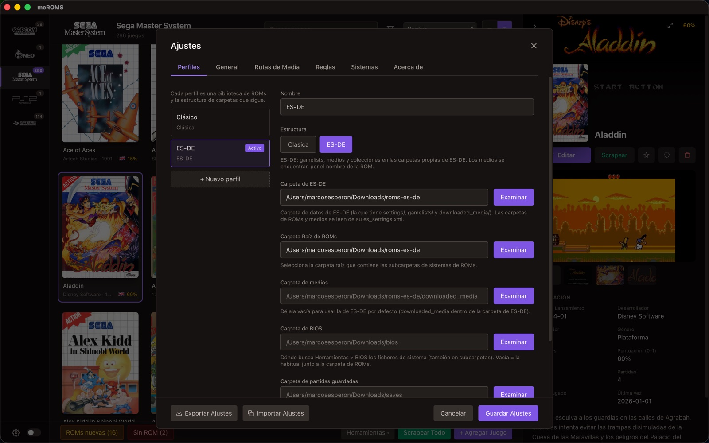
DownloadDescargar
Get meROMSConsigue meROMS
Installers for every platform are on the GitHub Releases page. Los instaladores de cada plataforma están en la página de Releases de GitHub.
macOS
Universal .dmg (Intel & Apple Silicon).dmg universal (Intel y Apple Silicon)
DownloadDescargarThe installers are not signed yet: the first time, macOS needs right-click > Open, and Windows SmartScreen needs "More info" > "Run anyway". Prefer to build it yourself? The README explains how. Los instaladores aún no están firmados: la primera vez, en macOS hay que hacer clic derecho > Abrir, y en Windows SmartScreen «Más información» > «Ejecutar de todas formas». ¿Prefieres compilarlo tú? El README explica cómo.
meROMS is free. If it saves you time, a small donation helps keep it going.
meROMS es gratis. Si te ahorra tiempo, una pequeña donación ayuda a seguir con él.
Buy me a coffeeInvítame a un café